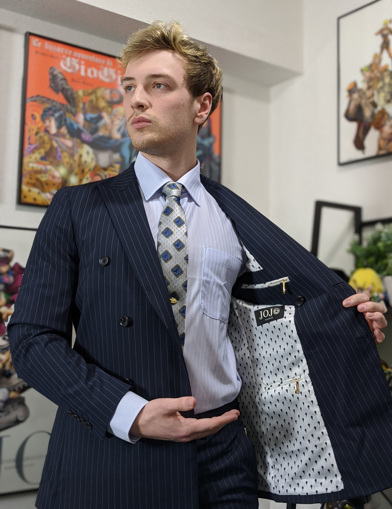
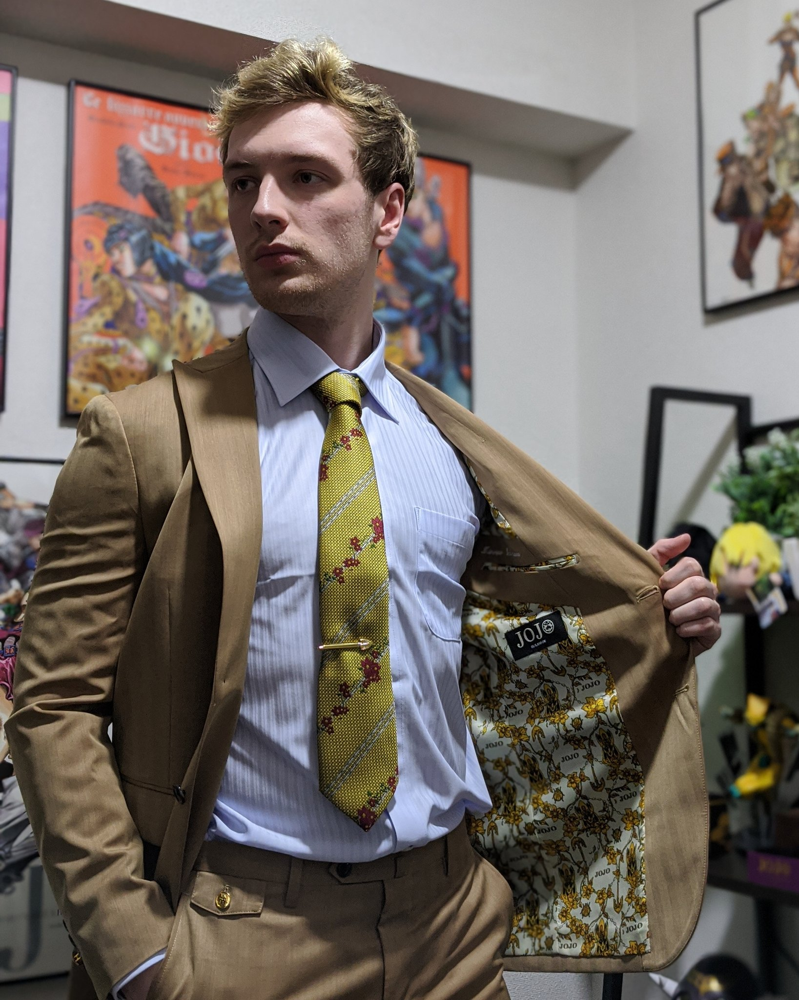
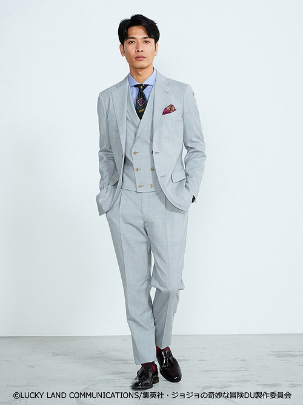
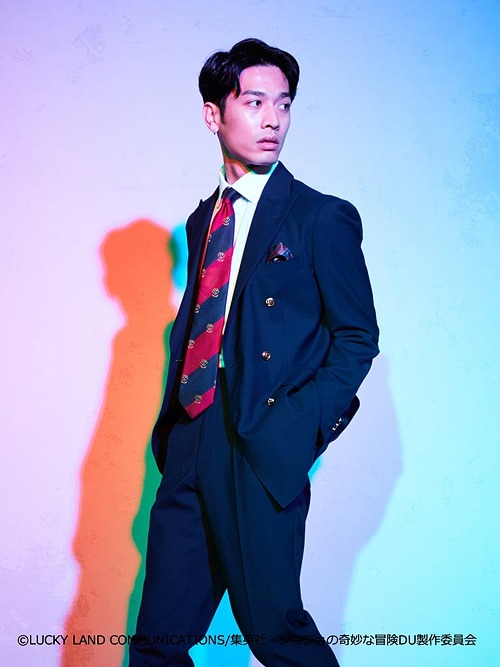
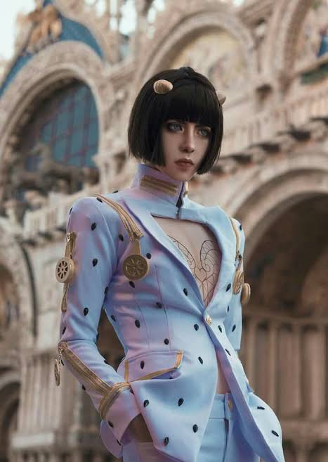
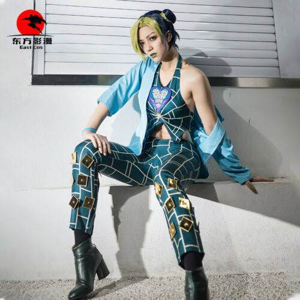

| Wellerman | Bones in the Ocean |
|---|---|
|  |  |
|
The first in line of the "Shanty" line of products. It offers a smooth and stylistic fashion for formal needs all the while maintaining an air of superiority over your peers Sold out. |
The second in line of the "Shanty" line of products. Contrary to its partner, this one harkens towards a more informal event. Perhaps during an outdoor party or wedding. Sold out. |
| Made In Heaven | The Reaper |
|---|---|
|  |  |
|
First in the "Heavenly" line of clothings. Made with the finest materials in all the land Made in Heaven is guaranteed to bring in the most formal and heavenly of all attire. Sold out. |
Second in the "Heavenly" line of clothings. The most killer attire in the entire shop It will definitely bring in a sharp and interesting vibe to your formal and informal events. Sold out. |
| Zipper Man | Stone Free |
|---|---|
|  |  |
|
First in the "Bizarre" collection, made specifically for renowned client Bruno Bucciarati. It allows him to fight intensively for long periods of time without risk of tearing the attire through seams made by the zippers. |
Second in the "Bizarre" collection and made for the daughter of a Speedwagon Foundation manager, Stone Free offers free movement which complements her highly evasive and athletic style of fighting . |